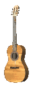

- ORAÇÃO DE SÃO FRANCISCO - Letra e música
- DOCE É SENTIR - "SOLO FRATERNO" - Letra e música
- 8º CENTENÁRIO DE SANTA CLARA - Letra e música
- BÊNÇÃO DE SÃO FRANCISCO - Letra e música
- ORAÇÃO PELA PAZ - Letra e música
- SANTA MARIA DOS ANJOS - Letra e música
- CANÇÃO A IRMÃ CLARA - Letra e música
- HINO DO BRASIL FRANCISCANO - Letra e música
- HINO DO CAPÍTULO DAS ESTEIRAS - Letra e música
- JUVENTUDE FRANCISCANA - Letra e música
- MISSA DE SANTA CLARA - Letra e música
- MISSA DE SANTO ANTONIO - Letra e música
- O ESPELHO DA PERFEIÇÃO - Letra e música
- HINO DAS CRIATURAS - Letra e música
- A PERFEITA ALEGRIA - Letra e música
- O AMOR NÃO É AMADO - Letra e música
- RECORDANDO FRANCISCO - Letra e música